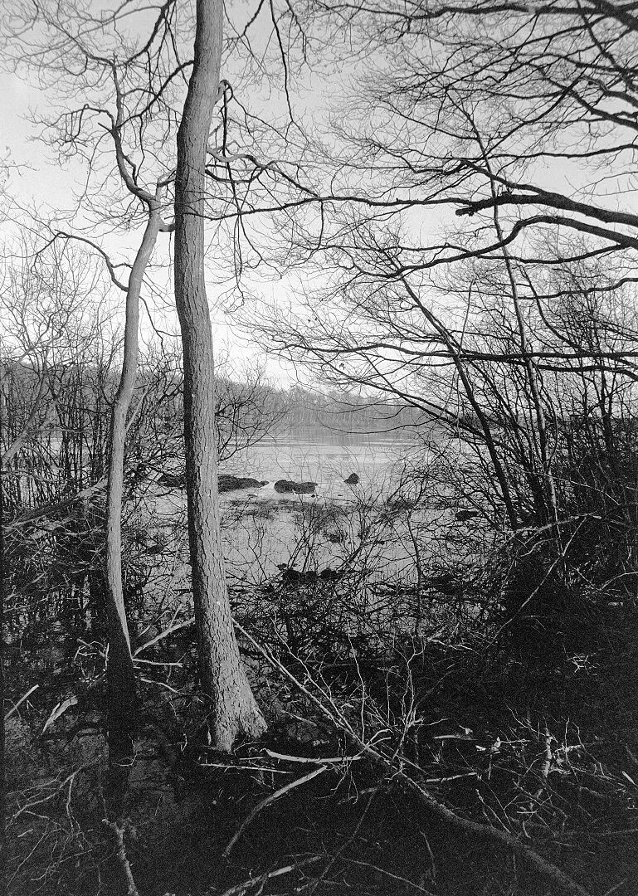

乐凯 C400 的片子糊不了：糊的是扫描
乐凯的C400，是继 C200 之后乐凯的第二款彩色负片，2026 年 7 月 23 日在上海 P&I 展上第一次线下公开，官方零售价 单卷 62 元。 它的第一批影像来自抖音，一片叫好。但从 9 月开始，海外评测集中反映同一个毛病：同一卷底片，扫出来整卷发绿、发黄，暗部还冒着蓝噪点。 国内社交平台上的说法更直接——「品控不稳」。 两边的指向其实不同：一个人说底片不行，一个人说扫描不行。这篇就把这件事拆开——哪些是官方公布过的、测试者测出了什么、你自己送冲扫时能要求什么。
| 这一件事 | 现在能确认到什么程度 | 依据 |
|---|---|---|
| 规格与官方口径 | C400 是 135 规格、ISO 400 民用彩色负片，官方称采用改良乳剂、标称感光度不虚标、宽容度与颗粒优化，红黄色系表现饱满，标准 C-41 工艺即可冲洗 | ✅ 乐凯在 P&I 展公布，东方摄影 2026-07-23 报道 |
| 价格 | 官方零售价 单卷 62 元，线上官方渠道 8 月初开启批量发货 | ✅ 同上（电商实际成交价随套餐与活动浮动） |
| 海外出现偏色与蓝噪点 | 多位测试者在不同扫描设备上复现同一现象，方法在 9 月公开 | ⚠️ 第三方评测（analog.cafe 等） |
| 「400T」边字是不是测试版 | 有用户指出底片边字仍印 400T，并把 T 读作 Test、推断仍是公测版 | ❗ 单一来源（Threads 用户），乐凯未找到回应 |
| 是不是批次问题 | 同款胶卷不同批次的差异，来自测试者自述，未见官方口径 | ❌ 未找到官方说明 |
| 是否要停产 / 换配方 | 未找到任何官方公告 | ❌ 未找到 |
一、先说清楚：出问题的不是感光度，是扫描
C400 上市后，国内出现了一批「感光度虚标」的说法。这条按现有证据站不住——参展时的官方说法是「ISO 400 不虚标」，而早期测试卷（2026 年 2 月在国内流出）的实拍反馈里，有一条专门提到这次没有出现 C200 的蓝点和横纹问题。 真正被反复测出来的，是另一件事：同一批底片，出片好不好，几乎全看你怎么扫。
测试者给的原因不复杂，都落在「底片本身长得跟别人不一样」上： ① 片基更厚，冲洗后、未干前看起来是乳白色的； ② 它的橙色色罩（mask）色相跟柯达、富士不是一回事——而各家扫描仪与反转软件，默认是按柯达／富士那一套去自动配色的。 色罩色相一偏，第一关就偏了：软件会把本该是黑的地方拉出明显的蓝，而同一张图其余部分又整个压向黄绿。当你用色平衡去压掉蓝，剩下的地方就更糟——这就是为什么很多人第一步就卡住。

二、这不是一个人的设备问题：五路独立复现
判断一个偏色是「我不会扫」还是「卷本身麻烦」，最省事的办法是看别人用别的设备有没有同样的现象。这次的答案是：有——
| 测试方 | 设备 / 方式 | 测出的现象 | 日期 |
|---|---|---|---|
| analog.cafe | Nikon Coolscan 5000ED ＋ VueScan，按「中性设置」存档再反转 | 每一格默认发绿，另带黄、橙偏色；暗部出现明显蓝噪点，且压蓝之后画面其他地方更差 | 2026-09-01（9-10 更新） |
| Norbi Whitney | 店内富士 Frontier 扫描＋家用数码翻拍、多种反转 App 交叉比对 | 同样的偏色；他发现加曝光（快门放慢或开大一级光圈）出片更稳 | 2026-09 |
| Derrick Buckner | 自家数码翻拍，RGB 背光三通道全开 | 复现同类问题 | 2026-09 |
| 测试者自述 | 同一卷里对比不同布光条件的画面 | 平光／高调光比的画面更好救；高反差画面里橙色色罩大面积露出，最难压 | 2026-09 |
| 测试者自述 | 改用 C-41 立式（stand）冲洗 后重扫 | 蓝噪点问题变轻，调色明显更容易，代价是饱和度下降 | 2026-09 |
⚠️ 有一条边界必须标清楚：「暗部蓝噪点」在数码翻拍里并不是 C400 独有的——高感彩色负片翻拍、以及部分反转算法本身就会带蓝噪。所以上面这些现象，能确定的是「这卷对扫描条件更敏感、容错更低」，而不是「扫坏了全是卷的错」。这也是为什么最早被引用的一条判断是：它更像一件还没做完的产品，而不是一本不能用的卷。
三、送冲扫时，把这几句话说完
四、什么情况下别为难自己
| 你的情况 | C400 要花的额外功夫 | 更省事的做法 |
|---|---|---|
| 拍大光比（正午硬光、窗口逆光、舞台灯） | 最难救：橙色色罩大面积露出，暗部与灰面要分开处理 | 这卷留给阴天、散射光、室内平光 |
| 拍人像，肤色要准 | 测试者普遍反映肤色偏粉，需要单独校正 | 先拿一卷试手，别把重要拍摄放第一支 |
| 店冲店扫，只想要现成 JPG | 偏色会跟着自动校色一起被写进成品，事后很难回退 | 换一家肯交「平文件」的店，或自己翻拍 |
| 自己扫，愿意花一晚上调色 | 这卷的颜色其实有可用的底子：色彩分离比德系彩负更清楚、颗粒更细 | 值——但要接受逐格调 |
一句话：C400 现在更像一支「需要你参与」的卷。 它的官方价是 62 元一卷（电商实际成交价随套餐浮动），跟同价位的进口 400 度彩负比，便宜的那部分，很大程度是让你自己承担彩色的判断。你要是愿意调，它能出片；你要是只想按完快门就直接发，那这一支不是最省心的选择。
五、一句话
同一张底片，「发绿」和「偏色」，中间隔着的往往不是运气，而是你在送冲扫单上写没写清楚那几句话。
数据口径
乐凯 C400 的规格与价格出自乐凯 2026 年 7 月 23 日在第 27 届上海 P&I 国际摄影器材展的公开信息（东方摄影报道：官方零售价单卷 62 元、135 规格、ISO 400、C-41 工艺、8 月初批量发货）；电商实际成交价随套餐与活动浮动，本站未做全网比价。 偏色与蓝噪点的现象、以及各处测试的设备与方法，出自第三方评测者 2026 年 9 月公开的资料（How to Fix Lucky C400 Film Scans、Lucky C400 Colour-Negative Film Review），文中标注为 ⚠️ 第三方口径，不代表厂商说法。 「400T 边字＝测试版」出自社交平台的用户观察与推断，乐凯未发布相关说明，属于 ❗ 单一来源，本篇不做结论。 站内黑白卷参考价取自本站胶卷库（全新价，仅供比较，随市场波动）。 本站 2026-09-19 那篇《乐凯 C400 上市一个月》记的是「口碑吵成两派，一半的锅在扫描」；本篇是它的续篇：把「锅在扫描」这件判断，换成可以照着做的操作。若日后乐凯就批次或边字给出官方说明，本篇按官方口径更新。
想顺带看几卷黑白，从这三卷开始
RPX 400（同为 ISO 400 · 135 参考价约 ¥45–60） Kentmere 400（便宜档 400 · 135 参考价约 ¥45–60） HP5 Plus（要反差就它 · 135 参考价约 ¥70–90） Silvermax 100（黑白反转玩法 · 135 参考价约 ¥60–80） UN54+（电影卷血统 · 135 参考价约 ¥50–70）
去胶卷库看看这几卷
「胶卷档案」是一个可搜索的胶卷资料库：每卷都有规格、特性、使用感受、参考价与实拍样片。搜品牌或型号就能直达。